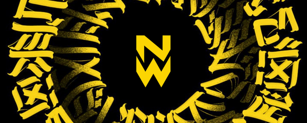

NO WAY
BACK.
Uma identidade. Uma equipe. Um objetivo.
Conheça a nova era da NOWAY ESPORTS.
OUR TEAM.
Uma equipe em constante evolução. Conheça quem constrói a NOWAY dentro e fora do servidor.
RAINBOW SIX SIEGE
WE DON'T
FOLLOW.
WE BUILD.
Uma estrutura forte não depende de nomes fixos. Ela depende de pessoas comprometidas com o mesmo objetivo.
OUR STORY.

UMA NOVA IDENTIDADE.
A MESMA AMBIÇÃO.
A NOWAY representa uma nova fase do projeto competitivo anteriormente conhecido como MORI. Uma identidade construída para fortalecer a organização, desenvolver jogadores e buscar espaço no cenário nacional de Rainbow Six Siege.
Mais do que um elenco, a NOWAY está estruturando sua gestão, seus processos de recrutamento e sua presença dentro e fora dos campeonatos.
COMPETITIONS.
Nossa trajetória competitiva, reunida em um único lugar.
BEYOND THE GAME.
Transmissões, vídeos, bastidores e tudo que acontece com a NOWAY.
BUILT TO LAST.
NIEL
Direção estratégica e visão da organização.
PRADO
Gestão operacional, recrutamento, testes e decisões sobre o elenco competitivo.
Na NOWAY, cargos administrativos e vagas competitivas são independentes. O elenco é rotativo e nenhuma titularidade é permanente — inclusive a do Founder.
BE PART OF
WHAT'S NEXT.
Acompanhe a NOWAY, conheça nossos conteúdos e conecte-se com o projeto.